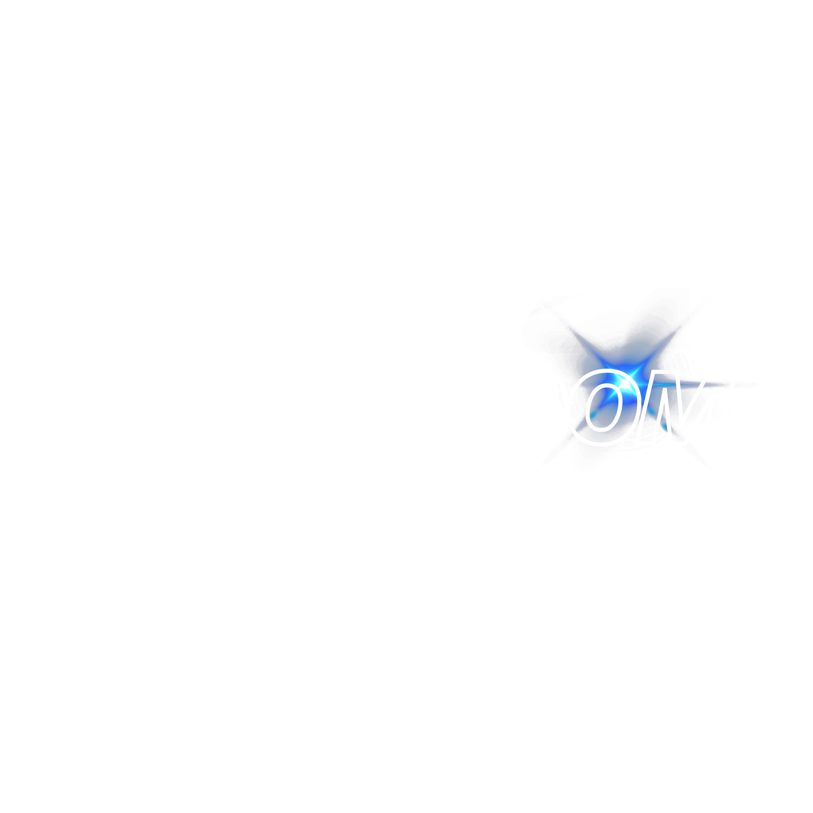

Thumbnail Maker
Optional. Some channels pick their frames differently, and that choice is made before processing.
The most text any one frame's caption may hold. The captions are cut at sentences and clauses to fit under it, and spread over the frames in order.
or
Select a frame
Drag the frames into any order — the numbers, file names and text split follow it.
Preview
Click and drop to reframe the image — drag past the edge and the gap is filled in automatically
Title — Frame 1
Saved to this frame automatically. Tick thumbnails to batch-download them.
Edit preset
Applies to this frame. Natural is the default look.
Image overlay
Drag it on the canvas to move; drag its corner handle to resize.